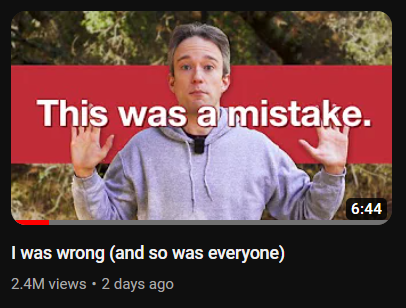
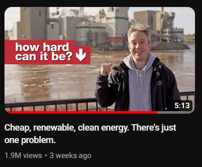
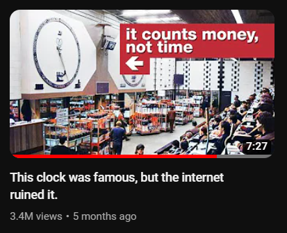
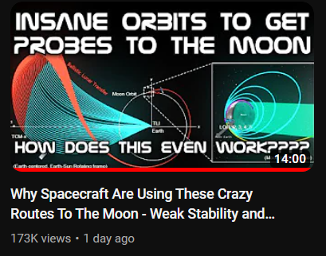
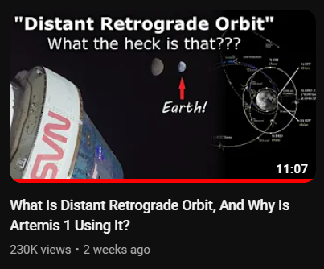

21st December 2022
I like Youtube. I quite like Tom Scott, but I don’t like his tendency to use clickbait titles. A recent video was particularly bad:

What is this video about? The title gives no clue. Most of his videos aren’t nearly as bad as is but he is still one of the worst offender among my Youtube subscriptions. Here are a couple of milder - but still annoying - examples:
 
Contrast this with Scott Manley’s videos:
 
It’s also pretty annoying everyone on Youtube uses the thumbnail as an opportunity to dollop on an extra clod of clickbait. There is an extension called Clickbait Remover for Youtube that turns the thumbnails back into frames from the actual video, but that’s all it does. It can remove some clickbait but it can’t add a proper title back.
That got me wondering - could ChatGPT create a new, non-clickbait title? Most videos have some information in the description, and you can download captions too. Here’s my first experiment using the “I was wrong” video:
Suggest a title for a Youtube video. It has the following description and transcript:
---- BEGIN DESCRIPTION ----
Did 18th century firefighters really let buildings burn? Sources below. ■ AD: 👨💻 NordVPN's best deal is here: https://nordvpn.com/tomscott - with a 30-day money-back guarantee.
Here's the full, thoroughly referenced report: https://www.tomscott.com/corrections/...
Thanks to historical consultant Paul J Sillitoe: http://www.linkedin.com/in/paul-silli...
Thanks to Afonso Noronha for the email sparking this whole discussion! All the corrections on this channel can be found here: https://www.tomscott.com/corrections/
The original video, now deprecated and unlisted: https://www.youtube.com/watch?v=sehyL...
I'm at https://tomscott.com
on Twitter at https://twitter.com/tomscott
on Facebook at https://facebook.com/tomscott
and on Instagram as tomscottgo
---- END DESCRIPTION ----
---- BEGIN TRANSCRIPT ----
Almost two years ago, I made a video about fire marks.
Back in the 18th century,
firefighters in London were funded by insurance companies.
When you insured a building, you would be given a fire mark,
a big plaque to put on the front
And if a fire ever broke out,
all the various companies' firefighters would rush to the scene.
and the story goes that they would look at the building,
and only fight the fire if they saw their company's mark,
or the mark of a company that they had an agreement with.
"If the building wasn't insured, they would let it burn."
This is a really well-known story in Britain,
it's part of the standard 'history of the fire brigades'.
Panel show QI has talked about it.
---- END TRANSCRIPT ----ChatGPT’s response:
“The Truth About 18th Century Firefighters and the Burning Buildings Myth”
Daaaamn. I know there’s been a lot of criticism about how ChatGPT is a master bullshitter and therefore cannot be relied upon when you need actual truth. But there are plenty of applications where it doesn’t really matter if it bullshits a bit. This feels like magic and I think it’s going to change a lot of industries (in about 10 years when a cheap enough API is available).
Let’s try a few more. I’m going to give it the original clickbait title and ask for a non-clickbait one. It probably understands what clickbait is, since it’s a very linguistic thing. First the clean energy video:
Suggest a non-clickbait title for a Youtube video. It has the following description, transcript and original title:
---- BEGIN DESCRIPTION ----
The Bay of Fundy has cheap, clean power: if you can harness it. ■ AD: 👨💻 NordVPN's best deal is here: https://nordvpn.com/tomscott - with a 30-day money-back guarantee.
I'm at https://tomscott.com
on Twitter at https://twitter.com/tomscott
on Facebook at https://facebook.com/tomscott
and on Instagram as tomscottgo
---- END DESCRIPTION ----
---- BEGIN TRANSCRIPT ----
The Bay of Fundy in eastern Canada has the highest tides in the world,
anything up to 16 metres difference between low tide and high tide.
And the effects of that show up in a few places around here.
Like Hopewell Rocks, where I'm not standing on a beach right now,
I'm standing on the ocean floor.
That's how far the tide is out.
Actually, I'm kind of sinking into it.
But in a few hours' time,
those rocks will be half-way underwater,
and if I stuck around,
I would be drowning in very cold, very fast and very deep ocean.
But I'm not going to do that!
Instead, I'm going to go about 40km that way, to--
--Moncton. It's the next morning, it's very cold,
---- END TRANSCRIPT ----
---- BEGIN ORIGINAL TITLE ----
Cheap, renewable, clean energy. There's just one problem.
---- END ORIGINAL TITLE ----Response:
“Harnessing the Power of the Bay of Fundy’s Record-Breaking Tides”
Not perfect - it doesn’t indicate that there’s some problem with harnessing the tides - but it’s pretty damn good! To be fair none of the information we gave it really told it what the problem with harnessing the tides is. I wonder if it can do better with the full transcript. I am unsure how much context ChatGPT can handle but it’s a short video so let’s try it! With the full transcript I’d guess it doesn’t need the original title or description.
Suggest a non-clickbait title for a Youtube video with the following transcript:
The Bay of Fundy in eastern Canada has the highest tides in the world,
anything up to 16 metres difference between low tide and high tide.
And the effects of that show up in a few places around here.
Like Hopewell Rocks, where I'm not standing on a beach right now,
I'm standing on the ocean floor.
That's how far the tide is out.
Actually, I'm kind of sinking into it.
But in a few hours' time,
those rocks will be half-way underwater,
and if I stuck around,
I would be drowning in very cold, very fast and very deep ocean.
But I'm not going to do that!
...
than what I paid for a two-year subscription.
Plus, being in Canada, some British sites
keep trying to be helpful and automatically redirect me to .ca domains,
or even occasionally say that I can’t access them at all
because I’m not a local.
Now I can say my phone or laptop are in the UK,
or any one of about sixty other countries if I want,
and a lot of stuff just works for me.
On my laptop and my phone,
up to six devices at the same time if I wanted.
If you go to nordvpn.com/tomscott,
you’ll find the best deal they’re currently offering,
and there’s a 30-day money-back guarantee,
just in case you change your mind the same way
this waterfall changes direction.Response:
“Exploring the Phenomenal Tides of the Bay of Fundy”
Disappointing. That’s worse than the previous one. Let’s try one more with previous technique:
Suggest a non-clickbait title for a Youtube video. It has the following description, transcript and original title:
---- BEGIN DESCRIPTION ----
TRIUMF's Rabbit Line, on the University of British Columbia campus, sends slightly radioactive material under the streets of Vancouver at 100km/h (60mph). Here's how and why. ◾ More: https://www.triumf.ca/headlines/curre...
Edited by Michelle Martin https://twitter.com/mrsmmartin
I'm at https://tomscott.com
on Twitter at https://twitter.com/tomscott
on Facebook at https://facebook.com/tomscott
and on Instagram as tomscottgo
---- END DESCRIPTION ----
---- BEGIN TRANSCRIPT ----
- Under the streets of Vancouver,
at the University of British Columbia,
there are pneumatic tubes 2½ kilometers long
that use air pressure to transport slightly radioactive stuff
underground from a particle accelerator to a hospital.
The tubes are called the Rabbit Line
and the only sign of them from the surface
is a few manholes, and some little studs in the ground
to mark the path.
Most of the students and staff here at UBC have no idea
that a few times every day, underneath their feet,
capsules with radioactive stuff speed by at up to 100 kilometers an hour.
So, we're going to start at the particle accelerator here
and explain how: how the stuff's made and how it's sent.
And then, at the receiving end, at the hospital,
we're going to explain why.
---- END TRANSCRIPT ----
---- BEGIN ORIGINAL TITLE ----
Firing radioactive stuff at high speed under city streets
---- END ORIGINAL TITLE ----Response:
“Exploring TRIUMF’s Rabbit Line: The Pneumatic Transport System for Radioactive Material at UBC”
Ok so they’re not the most creative titles but I’m amazed at how ChatGPT enables applications that would have been impossible only one or two years ago, and the effort required to implement them using ChatGPT is approximately zero.
I won’t be writing any Clickbait Fixer for Youtube extensions any time soon because ChatGPT has no API, but I hope you enjoyed this glimpse of the future.